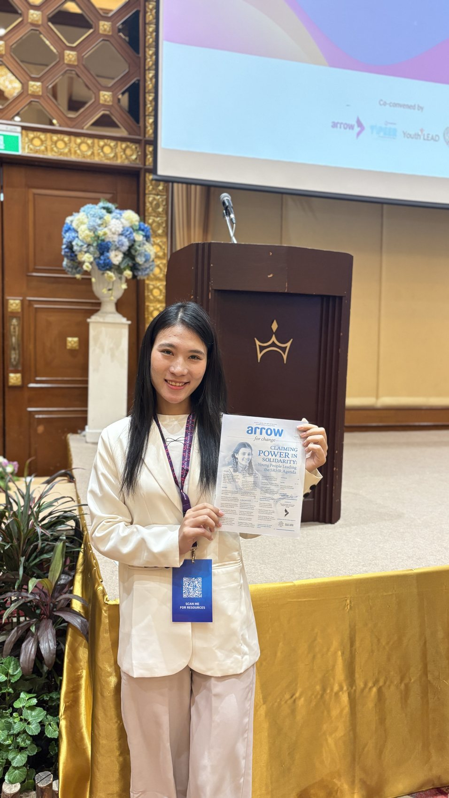
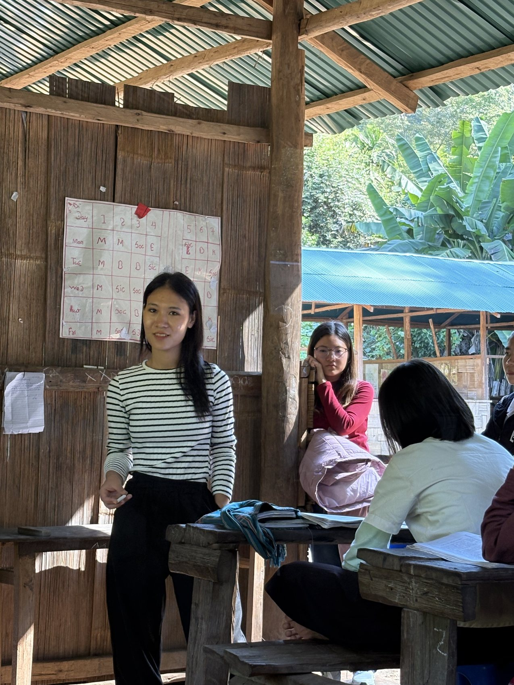
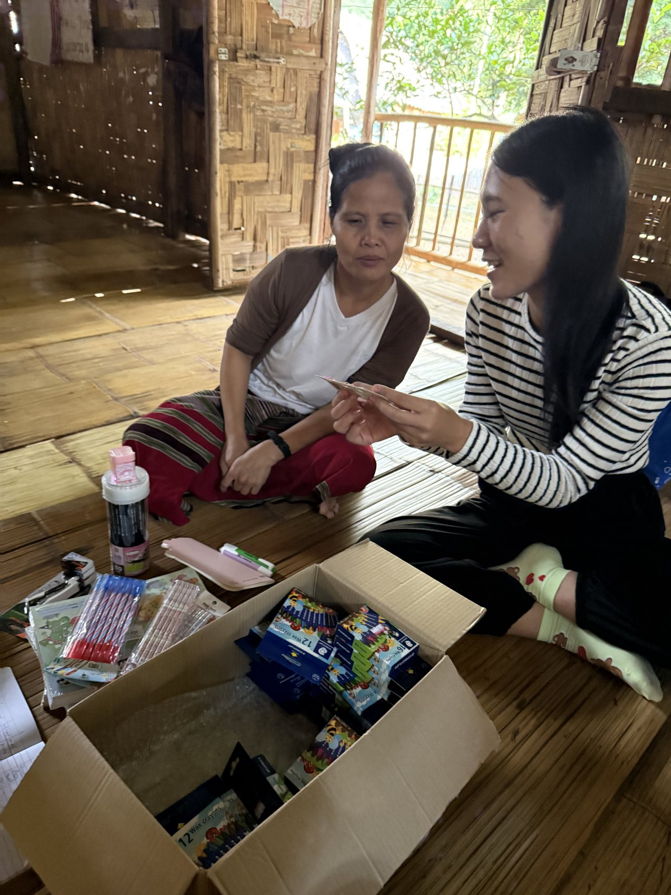

About me
I'm Naw Gay Gay — an educator and youth-empowerment advocate raised in the Karenni refugee community on the Thai–Myanmar border. Today I split my time between studying in Bangkok, mentoring students back at the border, and building Gae Gae Education with my co-founder.
Why I want to be an educator
Growing up in a refugee community, I watched how limited access to quality education narrowed the aspirations of many young people around me. I also experienced, firsthand, how education can do the opposite — provide hope, build resilience, and open a path toward personal and professional growth.
My time as an English teacher and in educational leadership reinforced something I now hold as a core belief: educators do far more than deliver instruction. Effective teaching cultivates critical thinking, encourages lifelong learning, and gives students the confidence to contribute meaningfully to their communities. Supporting students from diverse backgrounds has shown me that inclusive, student-centered education can transform not just individual lives, but entire communities.
Studying International Studies and Development has widened that lens further, sharpening my understanding of the structural barriers that keep vulnerable populations from accessing quality education — and strengthening my resolve to work on policies and initiatives that make learning more inclusive, equitable, and accessible.


Why youth empowerment
Young people aren't just the leaders of the future — they're changemakers today. Given the right opportunities, knowledge, and support, they build the solutions their own communities need most.
My own experience growing up in a refugee community — where barriers to education, leadership, and personal development are constant — showed me how much access, mentorship, and a supportive community can transform a young person's trajectory. That's what I try to build for others now.
Empowering youth isn't only about providing information. It's about helping them believe in their own abilities, take initiative, and grow into responsible leaders and active citizens — with the education, mentorship, and civic tools to get there.
What guides the work
Mission
To empower young people — especially refugees and marginalized communities — through quality education, leadership development, and equal opportunity. I build inclusive learning environments where every young person can develop the knowledge, skills, confidence, and values to become an active contributor to their community, through education, mentorship, and engagement.
Vision
A world where every young person, regardless of background, nationality, or circumstance, has access to quality education and the chance to reach their full potential — inclusive communities where education strengthens resilience, promotes social justice, and equips the next generation with critical thinking, compassion, and leadership.